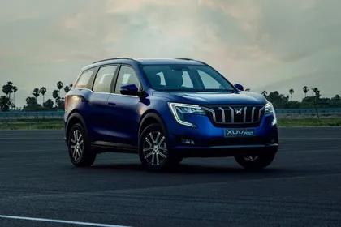
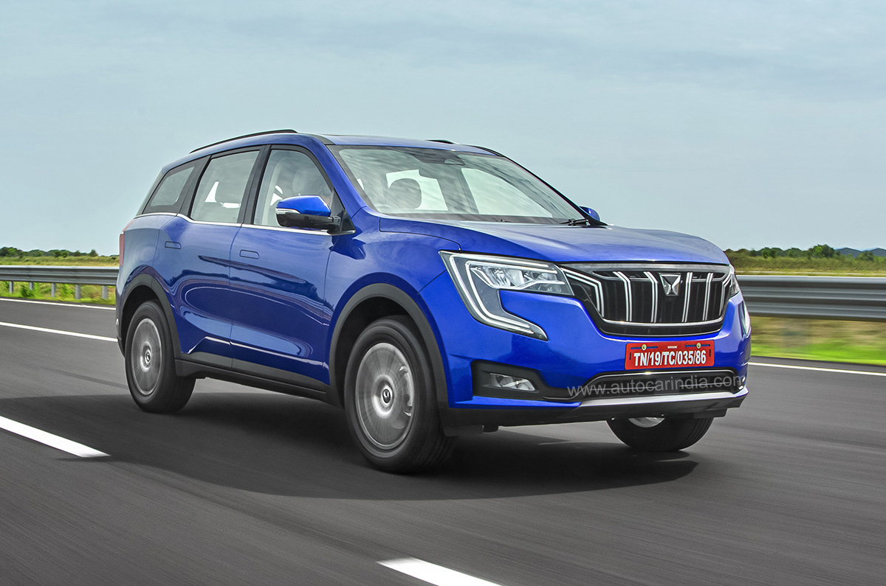

Mahindra XUV700
The Mahindra XUV700 is a compact crossover SUV produced by the Indian automobile manufacturer Mahindra & Mahindra.
Introduced in August 2021, the vehicle is positioned to replace the XUV500
The vehicle was introduced in India on 14 August 2021.
The XUV700 was originally designed as the second-generation XUV500
- In India, the XUV700 is available in two series, which are MX and AdrenoX
- The MX series has a single MX trim,
- while the AdrenoX series consists of four trim levels, which are AX3, AX5, AX7 and AX7L.
- The AdrenoX series is equipped with the eponymous AdrenoX, an Amazon Alexa-based voice command.
- Both 5-seater and 7-seater configurations are available.
- The top-end variant is also equipped with advanced driver assistance system (ADAS) technology tuned for Indian road conditions, making it the first Mahindra product to receive Level 1 autonomous tech.

